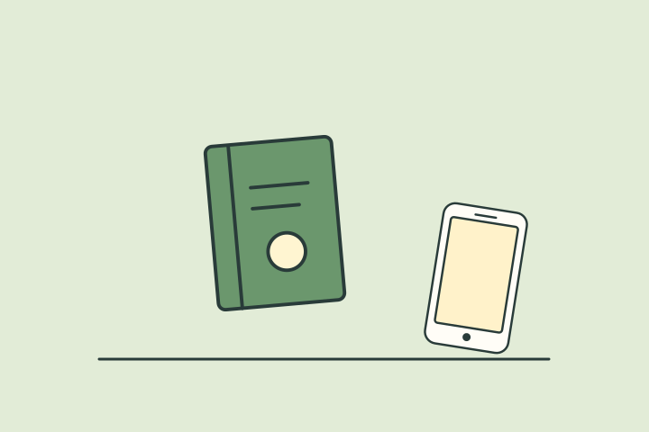

나의 결과는?
차분 관찰형
대화의 온도와 타이밍을 섬세하게 읽는 타입이런 타입이에요
당신은 대화의 양보다 결을 보는 편입니다. 너무 빠르게 들이밀기보다 상대의 반응, 템포, 말투를 읽으면서 안정적인 흐름을 찾습니다.
이런 순간, 나답죠
답장을 쓰기 전 앞선 이야기를 다시 보고 말투를 골라요. 메시지가 많기보다 서로의 관심사가 이어지는 대화에 마음이 가요.
- 타이밍 감각
- 상대 리듬을 잘 읽음
- 과하지 않은 매력
놓치기 쉬운 부분
신중하게 고른 짧은 답이 상대에게는 거리감으로 읽힐 수도 있어요. 조심스럽다는 이유로 반가운 마음까지 줄일 필요는 없어요.
오늘 해볼 한 가지
답장 첫 문장에 ‘그 얘기 궁금했어’처럼 반가움을 직접 적어보세요.
대화 무드 키워드
느린 호흡반응 읽기타이밍 보기타이밍 감각상대 리듬을
다른 타입과 나란히 보면
재미로 보는 성향 콘텐츠예요. 전문적인 심리 검사나 진단이 아니며, 타입 간 관계도 비교를 위한 이야기예요.
답변별 유형 점수를 더해 가장 높은 타입을 보여줘요. 동점이면 직진 온도상승형 → 편안한 스며듦형 → 장난 센스형 → 차분 관찰형 순서에서 앞선 타입이 표시돼요.
읽어봤다면, 친구와 비교해볼까요?
다음 테스트도 이어서 보기
 내 연애 열차 운행 타입은?
내 연애 열차 운행 타입은?